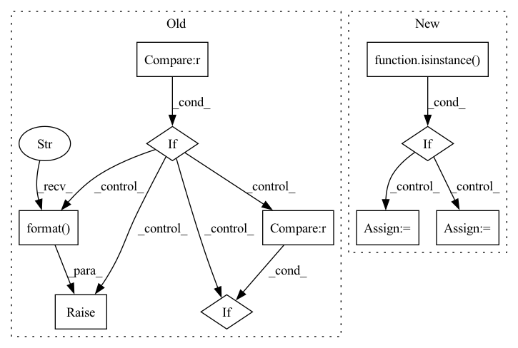

Pattern ID :25248
Before Change
df: pd.DataFrame, normalized
for name in df.columns:
if name not in data_params.keys() :
raise ValueError("Unexpected column {} in data".format( name) )
new_name = name
if name == "ds":
new_name = "t"
if name == "y" :
new_name = "y_scaled"
df[new_name] = df[name].sub(data_params[name].shift).div(data_params[name].scale)
return dfAfter Change
df: pd.DataFrame or list of pd.DataFrame, normalized
if isinstance( df, list) :
df_list = df.copy()
if local_modeling:
// Local Normalization
log.warning(
"Local normalization will be implemented in the future - list of data_params may break the code"
)
df_list_norm = list()
for df, df_data_params in zip(df_list, data_params):
df_list_norm.append(single_normalization(df, df_data_params))
df = df_list_norm
else:
// Global Normalization
df_joined, episodes = join_dataframes(df_list)
df = single_normalization(df_joined, data_params)
df = recover_dataframes(df, episodes)
else:
df = single_normalization(df, data_params)
return dfIn pattern: SUPERPATTERN
Frequency: 3
Non-data size: 10
Instances Fragment ID: 77160984
Project Name: ourownstory/neural_prophet
Commit Name: d07b79568ef37904de81ba00248764233fbaa8c8
Time: 2021-10-07
Author: ourownstory@users.noreply.github.com
File Name: neuralprophet/df_utils.py
M Class Name: AnonimousClass
N Class Name: AnonimousClass
M Method Name: normalize(3)
N Method Name: normalize(2)
M Parent Class:
N Parent Class:
M File Name: neuralprophet/df_utils.py
N File Name: neuralprophet/df_utils.py
M Start Line: 139
M End Line: 148
N Start Line: 253
N End Line: 286
Before Change
input_device = model.input_device
args = inspect.getfullargspec(model.forward).args
args_dict = {}
if any(arg not in args for arg in required_argument):
missing = []
for arg in required_argument:
if arg not in args :
missing.append(arg)
raise RuntimeError("Model missing required argument field(s): {}, "
"check your storage functions."
.format( missing) )
for na in named_args:
for k, v in na.items():
if k in args:After Change
Whatever returned by your module.
org_model = None
if isinstance( model,
(nn.parallel.DistributedDataParallel,
nn.parallel.DataParallel)) :
org_model = model
model = model.module
if (not hasattr(model, "input_device") or
not hasattr(model, "output_device")):
// try to automatically determine the input & output device of the model Fragment ID: 77161016
Project Name: iffix/machin
Commit Name: 344fc0fd5808cb59488596fbb7e88070b0a384a3
Time: 2020-07-31
Author: hanhanmumuqq@163.com
File Name: machin/frame/algorithms/utils.py
M Class Name: AnonimousClass
N Class Name: AnonimousClass
M Method Name: safe_call(1)
N Method Name: safe_call(1)
M Parent Class:
N Parent Class:
M File Name: machin/frame/algorithms/utils.py
N File Name: machin/frame/algorithms/utils.py
M Start Line: 107
M End Line: 124
N Start Line: 74
N End Line: 145
Before Change
obj_type = args.pop("type")
obj_cls = getattr(parent, obj_type, None)
if obj_cls is None :
raise KeyError("parent "{}" has not attribute "{}"".format(
parent.__class__.__name__, obj_type) )
if default_args is not None :
for name, value in default_args.items():
args.setdefault(name, value)
After Change
args.update(kwargs)
obj_type = args.pop("type")
if isinstance( parent, (list, tuple)) :
for p in parent:
obj = build_object(cfg, p, **kwargs)
if obj is not None:
return obj
return default
elif hasattr(parent, "get"):
obj_cls = parent.get(obj_type, None)
else:
obj_cls = getattr(parent, obj_type, None)
Fragment ID: 77161031
Project Name: yeliudev/nncore
Commit Name: 80c628457682d118c7e63a4396be323448fa248d
Time: 2020-04-18
Author: yeliudev@gmail.com
File Name: nncore/utils/registry.py
M Class Name: AnonimousClass
N Class Name: AnonimousClass
M Method Name: build_object(3)
N Method Name: build_object(3)
M Parent Class:
N Parent Class:
M File Name: nncore/utils/registry.py
N File Name: nncore/utils/registry.py
M Start Line: 77
M End Line: 89
N Start Line: 81
N End Line: 102